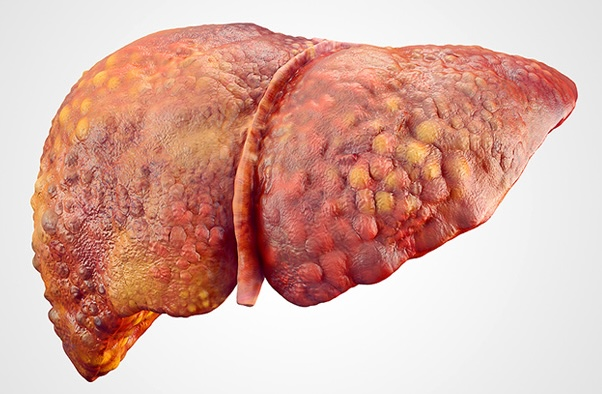

An extremely valuable resource created by liver specialists — providing detailed information about cirrhosis and its care, whether for patients, loved ones, or healthcare providers.
What is Cirrhosis and what causes it?
When the liver gets hurt repeatedly, it tries to heal itself, just like your skin does when you get a cut. Imagine scraping the same spot on your hand again and again. At first, your body heals, but over time, a scar forms. The liver does something similar: repeated injury — whether from fat deposition (in Fatty Liver Disease), alcohol use (in Alcohol-Related Liver Disease), viral infection (in Hep B & C), or attack from the body's immune system itself (in autoimmune diseases) — leads to scarring, known as fibrosis.
If the scarring becomes severe and widespread, the liver becomes stiff and struggles to do its vital work — this advanced stage is called cirrhosis. Therefore, almost all liver diseases, if left untreated, can result in liver cirrhosis.

How do we diagnose it?
Cirrhosis is diagnosed using a combination of tools. Special blood tests can suggest liver dysfunction or signs of scarring. Imaging tests that measure liver stiffness, such as FibroScan or elastography, can help confirm the presence and extent of cirrhosis. In some cases, a liver biopsy may be needed to provide more detailed information.
How can it be treated?
Unfortunately, severe cirrhosis cannot be reversed. In end-stage liver disease, when the liver can no longer keep up with the body's needs, a liver transplant may be the only life-saving option.
How can we prevent it?
Since cirrhosis is advanced scarring due to untreated liver disease, the best way to prevent cirrhosis from occurring is to detect liver disease early and to treat it before it progresses to this advanced stage.